Экраны мини-приложения
Полная опись экранов мини-приложения клуба. Каждый снимок сделан с живой страницы на экране телефона 390 × 844 — это не макет и не рисунок поверх идеи: то же самое открывается по ссылке ниже.
Стадия каждого экрана — рамкой, и берётся она из одного файла (СТАДИИ.tsv), а не ставится руками. «Видят» — это ВЫВОД ПО КОДУ приложения: от вкладок человека прибор идёт по входам на отрисованных экранах, пока находятся новые. Право без входа видимостью не считается. Где вход рисуется строкой данных сервера или туда уходит сам код, это сказано словами: «никто» у такого экрана значило бы не «пути нет», а «нечем измерить». Под каждым человеком экран никто не открывал, наблюдение — отдельный шаг. Состав ролей и членств взят из тестовой базы (замер devops5, 27.10.2026, только чтение), а в бою он другой: у владельца там бессрочное членство, и вкладка «Клуб» у него есть. Строка «состояние» у невключённого экрана отвечает на вопрос телефоном: вход в приложении открыт (человек дойдёт и увидит «Раздел ещё не подключён»), закрыт самим реестром (включится вместе с экраном) или его нет вовсе. Считается она по `app.js` ЭТОЙ редакции — по тому же файлу, с которого снята видимость, а не по выложенному: их сверяет отдельный прибор (tools/check-stages.py).
Первый вход
То, что человек видит до всего остального — один раз, при первом открытии.


Гость без членства
Без членства открыты услуги острова и бар. Клуб закрыт, и это сказано прямо, а не спрятано.

Член клуба
Ежедневные экраны: пропуск, афиша, записи, баланс.


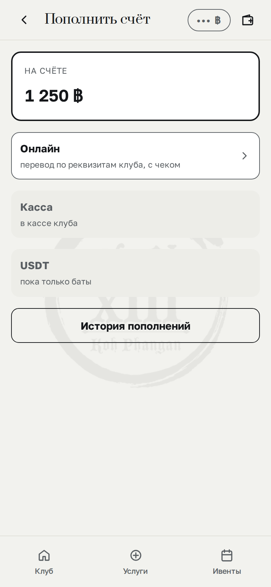
Бар · гость заказывает
Первое направление клуба. Меню, заказ из приложения, состояние заказа.


Бар · исполнитель
Рабочее место на баре: заказы, съёмка напитков, отчёт за день, затраты направления.


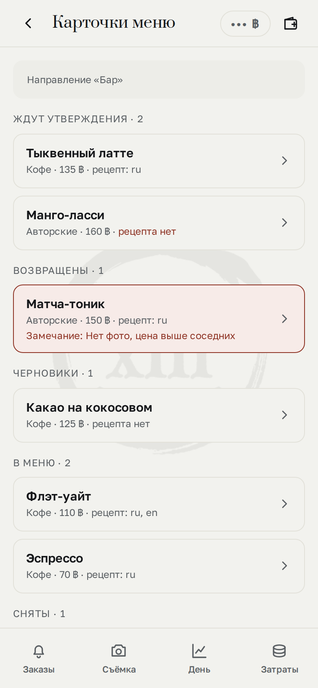
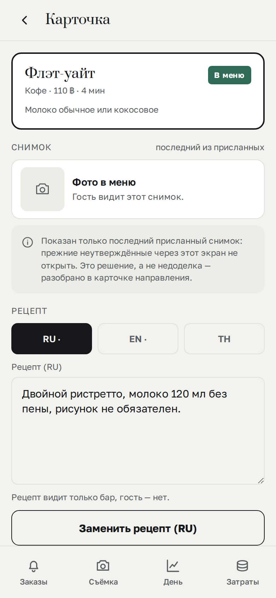
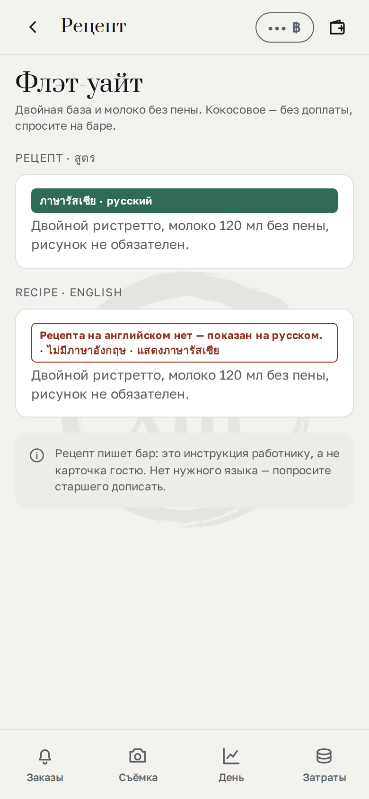
Бар · куратор
Кабинет куратора: деньги месяца, доля клуба, состояние меню.


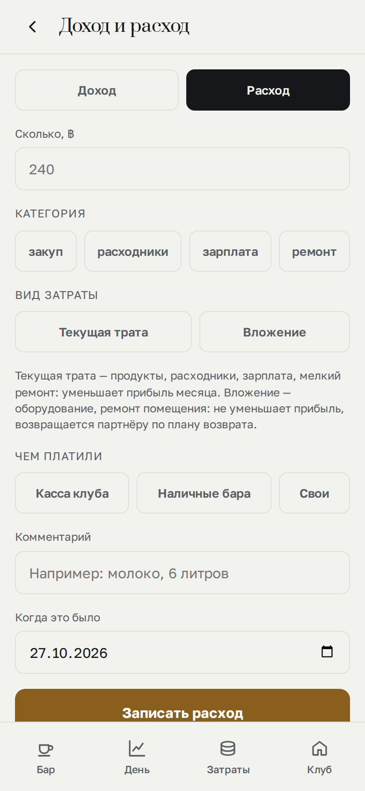
Мастер
Член клуба, который проводит свои мероприятия и сам назначает их цену.


Бизнес-партнёр
Член клуба со своим направлением внутри клуба и его отчётностью.


Касса
Работник: сканировать пропуск, внести деньги.

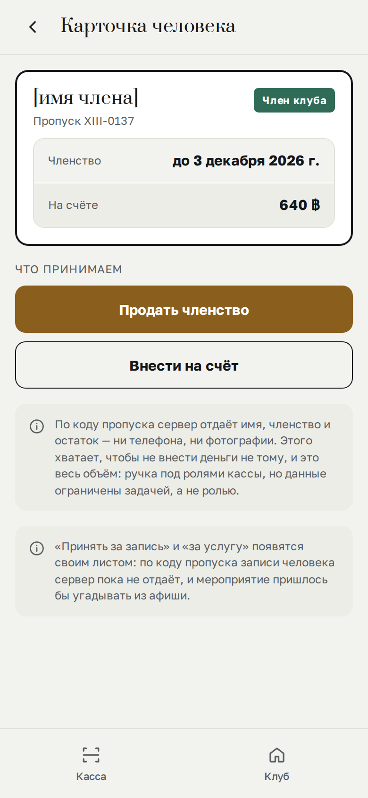
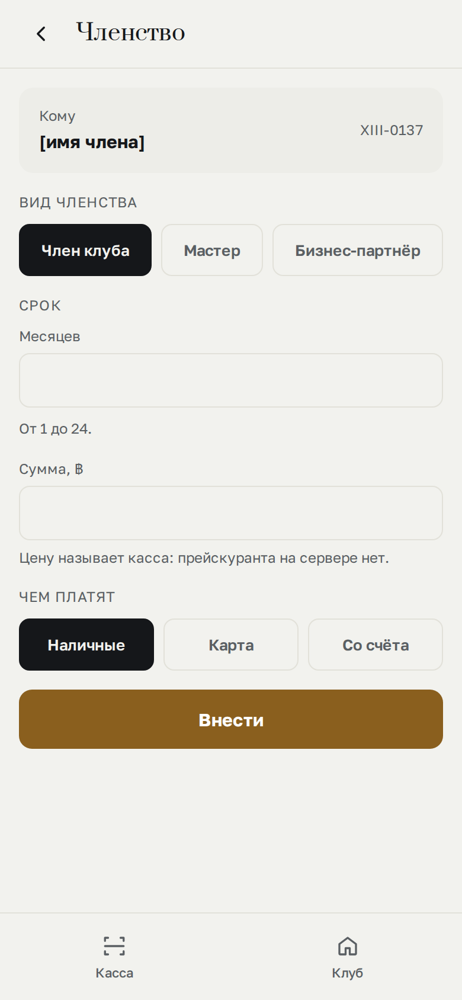
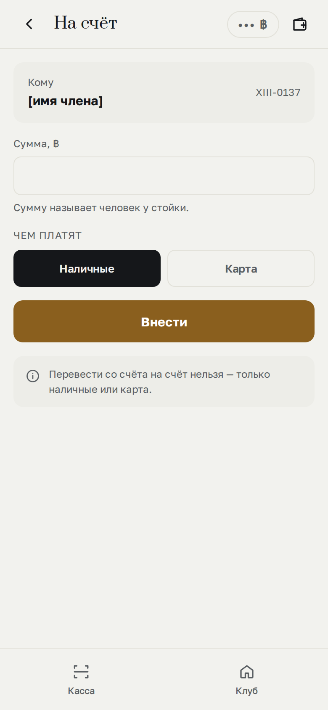
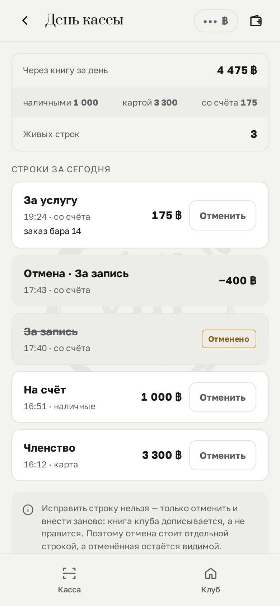
Служебное
Экран под солнышком. Кнопка солнышка есть только у god и god_mentor в Telegram; вне Telegram её нет ни у кого. Снимок — тот же экран в демонстрации.

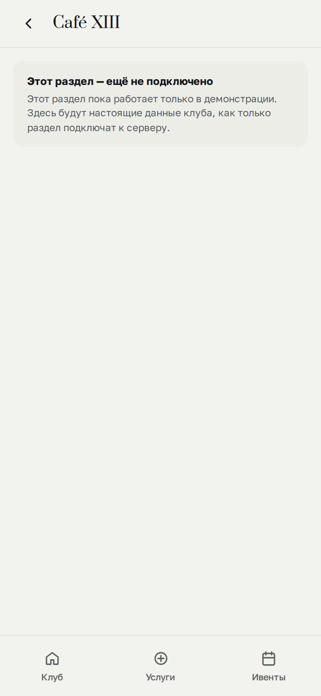
Клуб · ответственность
Кто за что отвечает в клубе: выдать и снять роль.
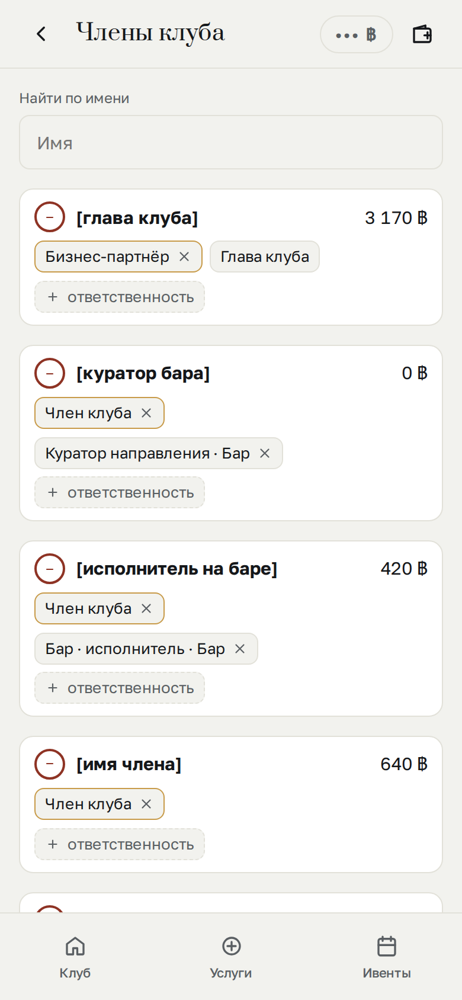
Ночная тема
Тему задаёт Telegram, а не приложение. Ночные цвета сняты с вечернего света места.


Без снимка
Нарисовано, кода ещё нет
Кадры базы экранов есть, кода нет. Стадия 1 по пути экрана: сначала рисуем, потом разрабатываем.